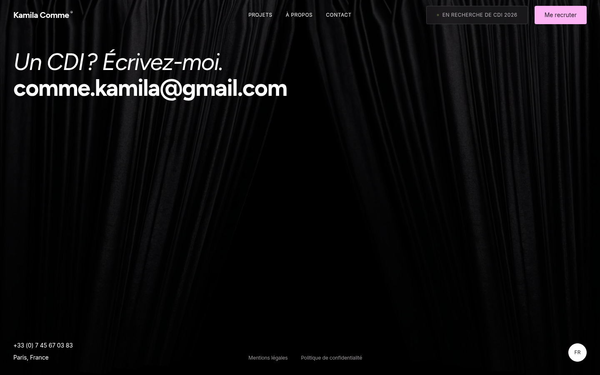
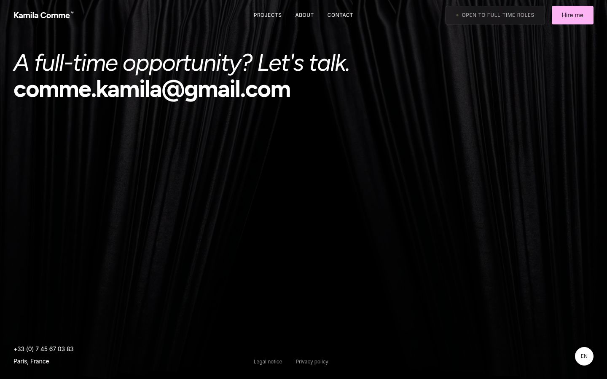
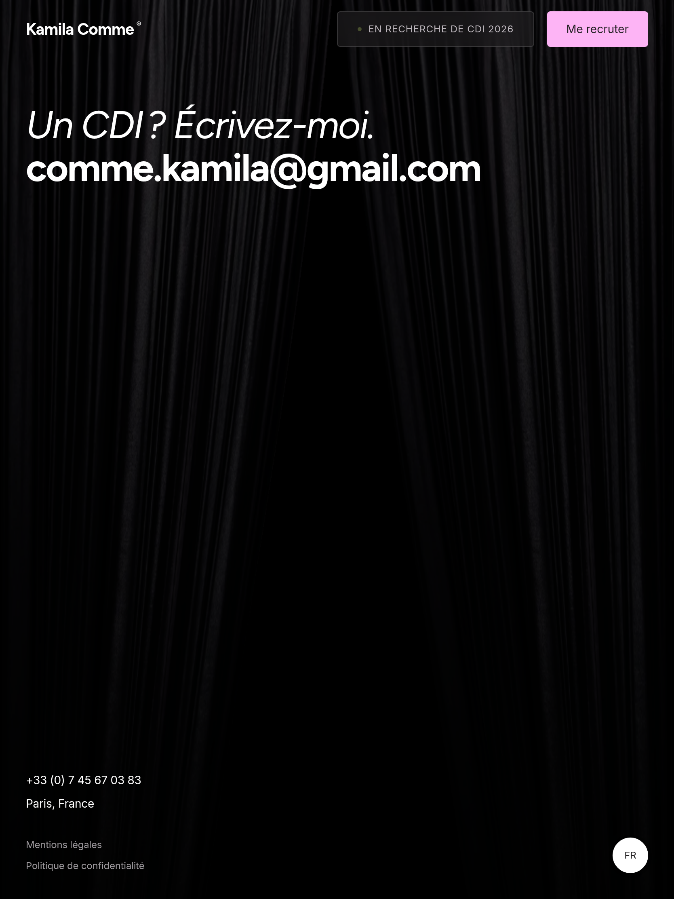
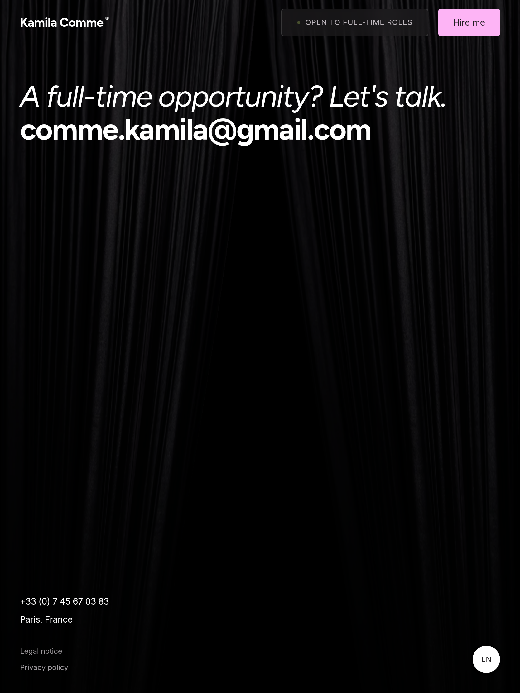
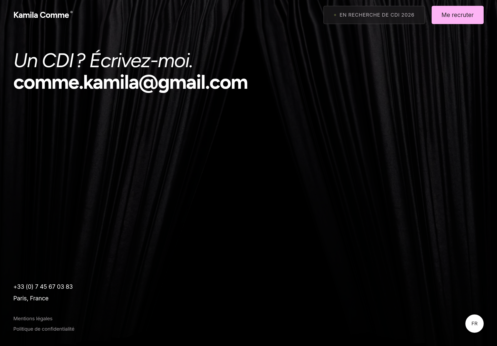
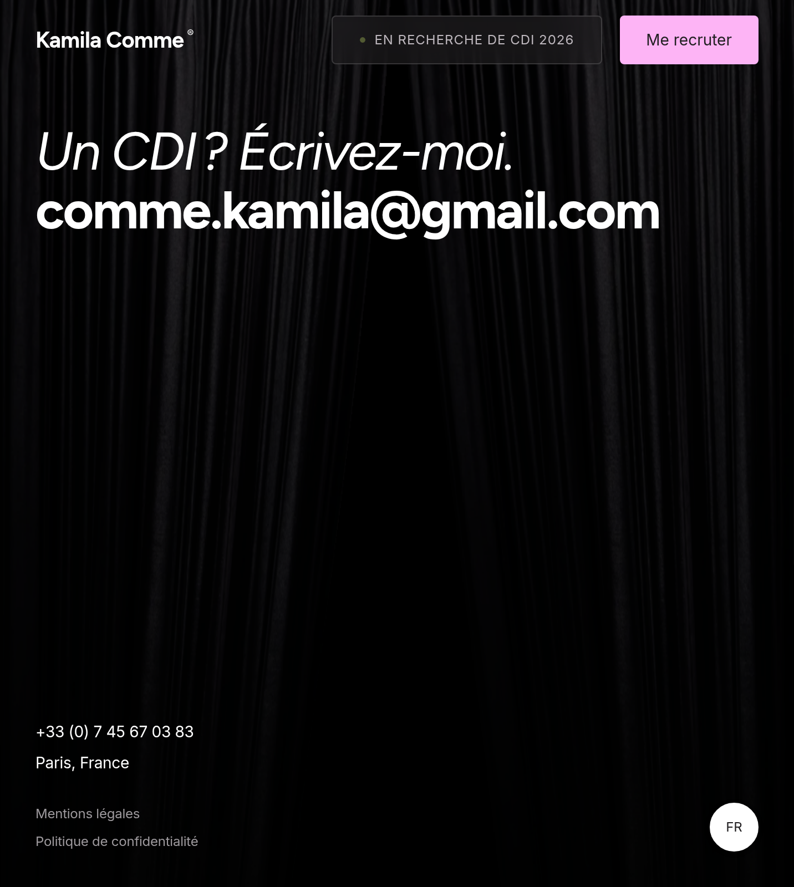
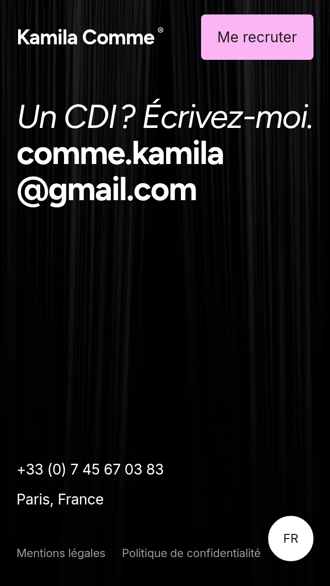
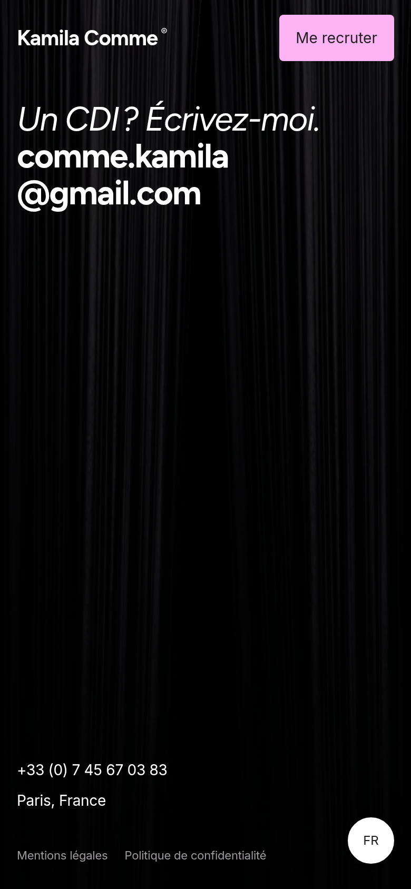
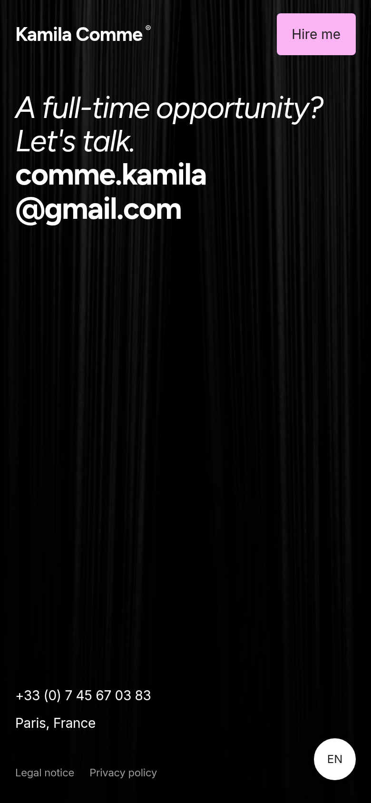

Local Chromium captures after the curtain settled. Both languages are shown at each viewport. On mobile, the heading/email group reclaims the former 72px video slot. Desktop and tablet content positions are preserved.








